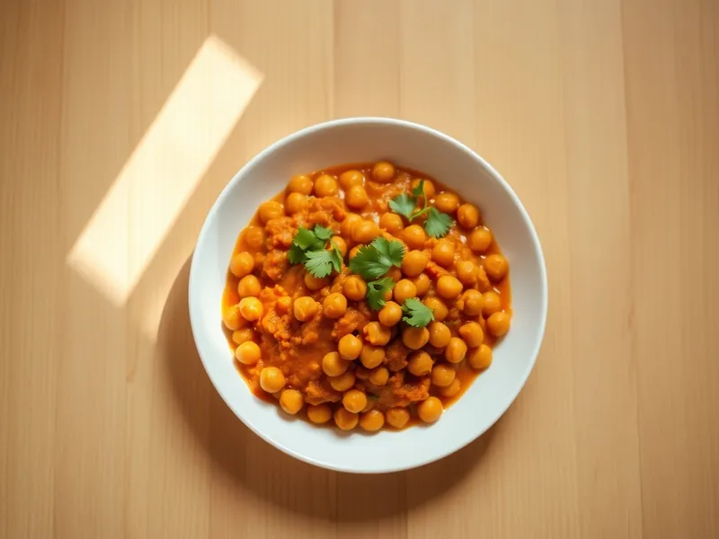

Чана масала (нут в томатном соусе)
Нут из банки в густом томатном соусе с луком, чесноком, имбирём и карри
25 мин3 порц.386 ккал на порциюБ 15 · Ж 15 · У 51Интернациональная кухня
Открыть в приложении: порции, таймеры, список покупок
Продукты на 3 порц.
- Нут2 банки
- Лук репчатый1 шт
- Томаты в собственном соку1 шт
- Чеснок2 зуб.
- Имбирь10 г
- Карри (приправа)2 ч. л.
- Растительное масло2 ст. л.
- Вода100 мл
- Соль1 ч. л.
- Кинза по желаниюпо вкусу
Как готовить
- Слейте жидкость с нута и промойте его. Лук мелко нарежьте, чеснок и имбирь натрите на мелкой тёрке, на это уйдёт 3 минуты.
- Обжарьте лук в масле на среднем огне 5-6 минут до золотистого цвета.
- Добавьте чеснок, имбирь и карри, жарьте 1 минуту, помешивая, пока не пойдёт сильный аромат.
- Вылейте томаты, разомните их лопаткой, посолите и тушите на среднем огне 5 минут, пока соус не загустеет.
- Положите нут, влейте 100 мл воды и тушите под крышкой на слабом огне 8-10 минут. Часть нута разомните ложкой прямо в сковороде, чтобы соус стал гуще.
- Посыпьте кинзой и подавайте с рисом или лепёшкой.
Совет. Если соус получился жидким, разомните ещё пару ложек нута: крахмал из него загустит соус без муки.